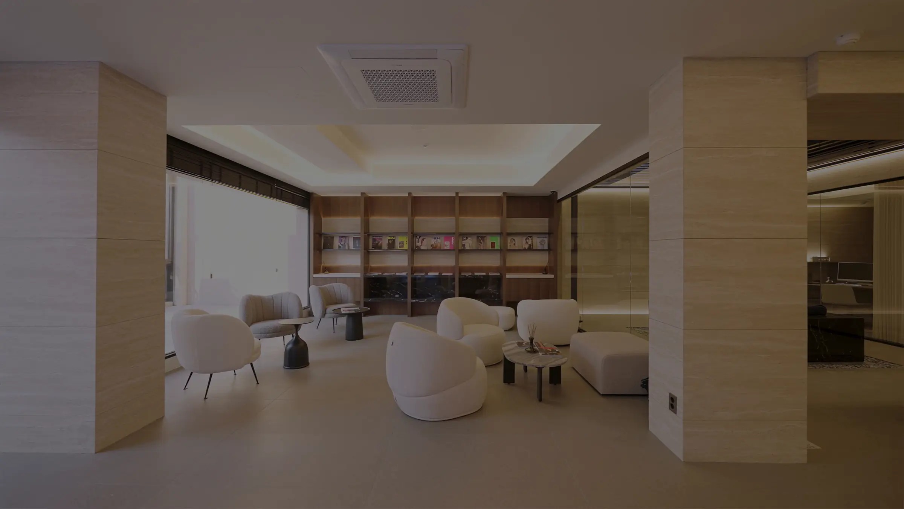
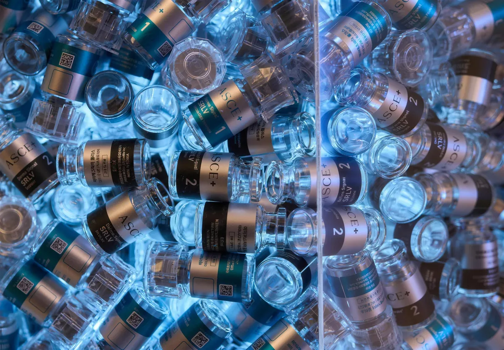
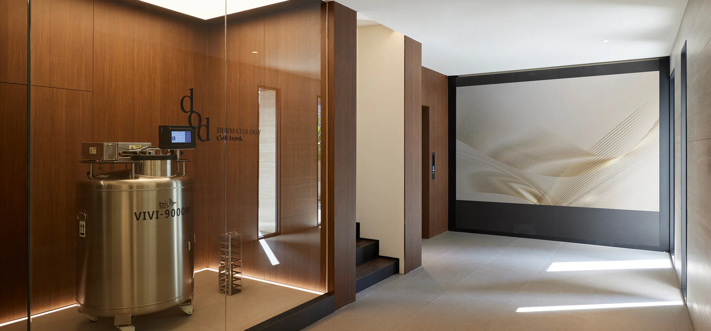
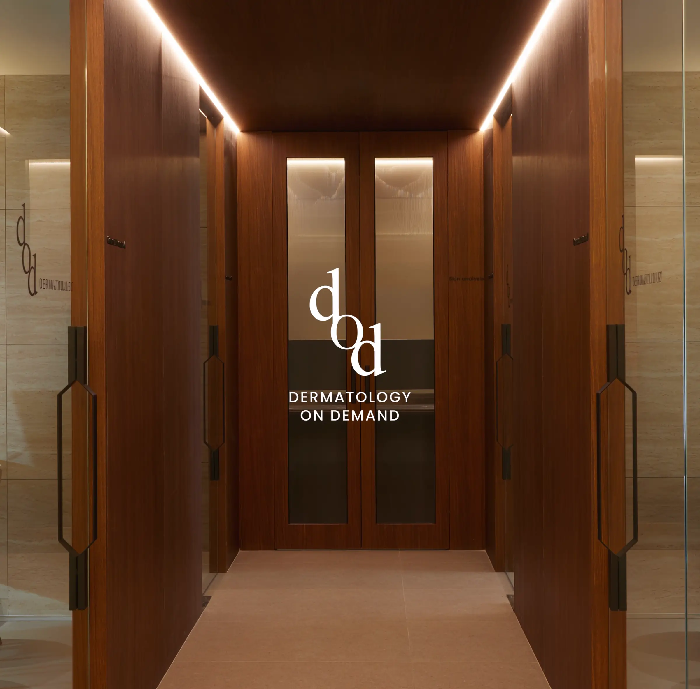
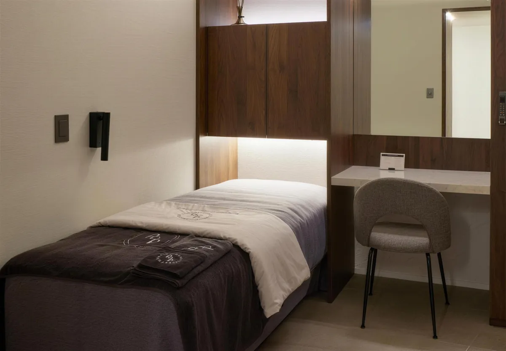

한 사람에게
집중하는 공간
청담 라운지. 오후의 빛이 머무는 자리에서 이야기를 시작합니다.

실제 공간 사진 기반 AI 연출피부는 서두르면 보이지 않습니다.
천천히 보아야
보이는 것이 있습니다.
— DOD Edit, Vol.01 Cheongdam
이 호는 디오디 청담을 공간, 진단, 상담, 사람, 진료 분야, 방문이라는 여섯 면으로 읽습니다. 공식 홈페이지 사진과 이를 바탕으로 제작한 AI 연출을 사용했습니다. AI 연출은 해당 장면에 표시합니다.
진료 과정과 상담 운영에 대한 안내는 공식 홈페이지 자료를 기준으로 합니다.
Contents 여섯 가지 이야기 ↓Vol.01 / ContentsDOD Cheongdam





복도 끝, dod 로고가 보이는 문 앞에서
공식 사진으로 복도와 독립된 1인 시술실을 소개합니다.

살피고,
이야기하다
피부 상태와 관심 부위를 의료진과 함께 살펴보는 것에서 진료가 시작됩니다. 이어지는 상담에서는 이전 시술 이력과 일정을 바탕으로 진료 방향을 정합니다.
Next · 04 사람을 만나다사람을 만나다
얼굴보다 과정으로 소개합니다. 진료와 연구의 역할을 안내합니다.
방문 전 안내
- Q1진료는 어디에서 시작되나요?
피부 상태와 관심 부위를 의료진과 함께 살펴보는 것에서 시작합니다. 진단 안내 후 상담으로 이어집니다.
- Q2상담에서는 무엇을 이야기하나요?
관심 부위와 이전 시술 이력, 회복과 일정에서 고려할 점을 바탕으로 진료 방향을 함께 정합니다. 복용 중인 약과 알레르기는 의료진에게 직접 알려 주세요.
- Q3시술은 어떤 공간에서 진행되나요?
독립된 1인 시술실에서 진행합니다. 공식 사진으로 복도와 시술실을 소개합니다.
- Q4진료와 연구는 어떻게 이어지나요?
진료는 의료진이, 연구는 연구진이 맡습니다. 자세한 소개는 공식 홈페이지의 의료진 안내에서 확인하실 수 있습니다.
- i.이준대표원장
- ii.안정식원장
- iii.황승경원장
- iv.이준원원장
- v.김진아박사 · 연구진
다음 이야기는,
청담에서
The next story, in Cheongdam
서울 강남구 도산대로 423디오디피부과의원 청담
- 월–목
- 10:00–19:00
- 금
- 10:00–21:00
- 토
- 10:00–16:00
- 휴게(월–금)
- 13:00–14:00
일요일·공휴일은 병원에 확인해 주세요.